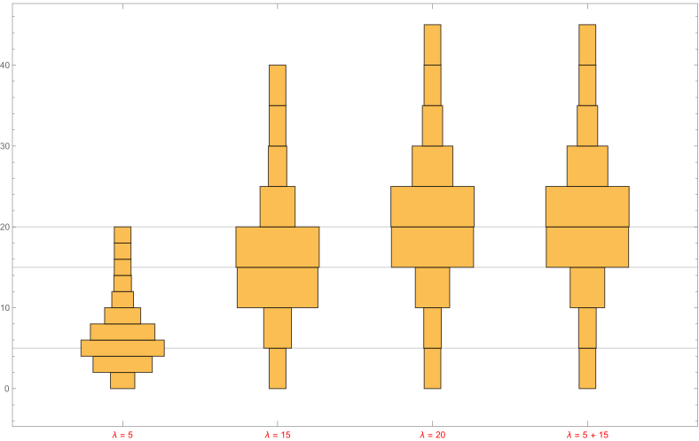

(Sums of Independent Poisson Random Variables) Let \(X\) and \(Y\) be independent Poisson random variables with respective means \(\lambda_{1}\) and \(\lambda_{2}\). Calculate the distribution of \(X + Y\).
We write discrete distributions as \(P\{X = n\}\), which when read out loud is the probability of the random variable taking the value of \(n\). The question asks for the distribution of X + Y. This means we write it out as P\(\{ X + Y = n\}\). Consider the case when \(X\) takes a value of \(0 \le k \le n\). There is now a constraint on how much \(Y\) is allowed which would be \(0 \le Y \le n – k\). The probability representation then becomes \[P\{X + Y = n\} = \underset{k}{\Sigma} P\{X = k, Y \le n – k\} : 0 \le k \le n\] Let us assume that the rates of X and Y are \(\lambda\) and \(\gamma\) respectively. Since \(X\) and \(Y\) are independent, \[\underset{k}{\Sigma} \; P\{X = k, Y \le n – k\} = \underset{k}{\Sigma} \; P\{X = k\} \; P\{Y \le n – k\}\] \[\Sigma e^{-λ} \frac{\lambda^{k}}{k!} e^{-\gamma} \frac{\gamma^{(n-k)}}{(n-k)!}\] Rearranging the terms, we get, \[e^{-(\lambda + \gamma)} \frac{(\lambda + \gamma)^{n}}{n!}\]
The simulation should be straightforward for this problem. See the image below,
Module[{rates = {5, 15, 20}, sample = 200000},
DistributionChart[
Association[(Style["\[Lambda] = " <> ToString[#], Red] -> RandomVariate[PoissonDistribution[#], sample] & /@ rates)
~Join~
{Style["\[Lambda] = 5 + 15", Red] -> Plus @@ (RandomVariate[PoissonDistribution[#], sample] & /@ {5, 15})}]
, ChartLabels -> Automatic
, ChartElementFunction -> "HistogramDensity"
, ImageSize -> 788
, GridLines -> {None, rates}]
]
Things to note from the image above. Notice how third and the fourth distributions are identical but, the methodology by which they have been obtained is different. The third one, which shows \(\lambda = 20\) has been obtained with a poisson of rate 20 but the last one that shows \(\lambda= 5 + 15\) has been obtained by summing up two independent poisson distributions. This concurs with the mathematical approach done in the section above.
